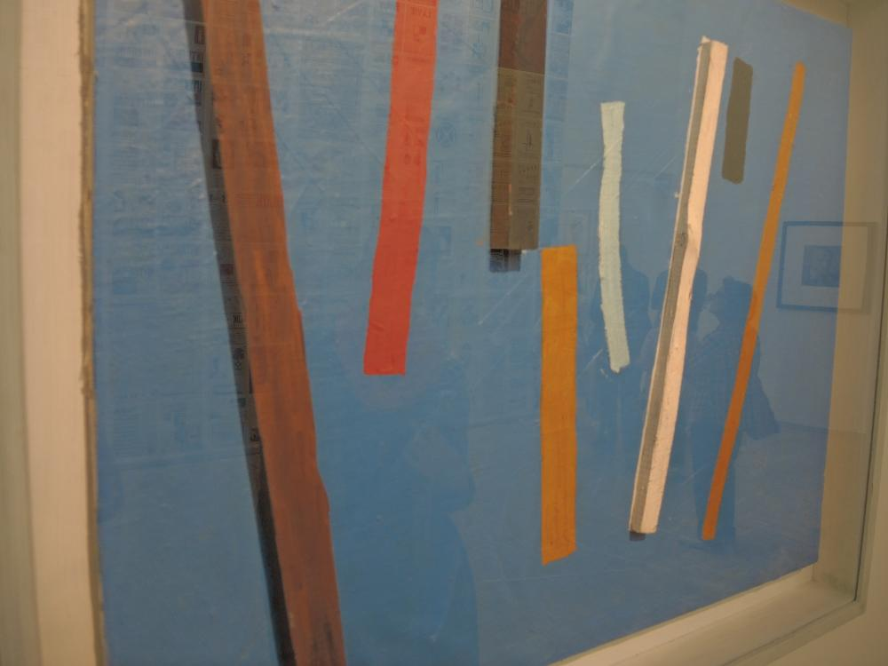

Париж. День тринадцатый.
28.06.2014
- Додждь целый день
- Я иду в Центр Жоржа Помпиду!
- Современное искусство оно необычное
- Как отличить искусство от неискусства

28.06.2014
1. Типо как битлз только Натаха.
2. Дождь это мокро и обидно.
1. Обстановка в парижском метро в целом описывает ситуацию во всем городе.
2. К нам не подсаживаются, это все потому что мы "белые".
1. Спрятались от дождя в Центре Жоржа Помпиду
2. Это ненастоящие люди, пусть помокнут.
Там очень много всяческого современного искусства в любых его проявлениях!
Наиболее заинтересовавшее внизу
1. Как красятся современные девушки
2. Смотря на голых женщин можно не заметить, как корова съест цветы из вазы.

1. Вот это не сразу и поймешь
2. Иногда, чтобы разобраться , что хотел сказать художник, нужно изучить его биографию.

1. Пикассо рисовал супер непонятно. Навероное, суть в том что каждый видит свое.
2. Какое-то несбывшееся будущее.
1. Найди настоящиее и нарисованные
2. Вроде чего сложного - взял линейку и за полчасика нарисовал шедевр. А ведь это направление даже имеет название. Когда стоял и смотрел на картину - я даже помнил его.
Не знаю зачем я старательно перевернул картину,наверное, чтобы она висела правильно, но разве что-то изменилось? Уверен ценители бы сказали - "возмутительно, конечно смысл меняется"
1. Примерно так выглядят окраины Парижа
2. Корова на пафосе.
1. Одна из любимых. Путаны у гадалки.
2. Чем больше налепишь краски - тем ценне картина?
1. Советую нажать-увеличить и погрузиться в раздумия.
2. Эти 3 картины вызвали очень много споров с моим коллегой. Коллега утверждал, что слева-направо "женщина","мужчина", а вот что третье - так и осталось не разгаданным, хотя версии были прям "УХ"! Я же утверждал, что мне жарко и хотел на улицу.
1. Не предствляю даже сколько стоит это произведение.
2. Внутри телефизора оказались мы.
1. Внутри
2. Боровое в июле
День оставил неопреодолимое желание - накупить вина, красок, холстов, возможно водки, и рисовать, или просто водить кистью, или сооружать, или клеить, или лепить какую-нибудь чушню, главное творить! И может быть когда-нибудь, мною созданная в пъяном бреду фиговина будет красоваться в центре Жоржа Помпиду на выставке современного искусства. И кто-нибудь ее сфоткает и выложит в блог, подписав смешной комментарий.
{kind=link}
{kind=link}
{kind=link}
{kind=link}
{kind=link}
{kind=link}
{kind=link}
{kind=link}
{kind=link}
{kind=link}
{kind=link}
{kind=link}
{kind=link}
{kind=link}
{kind=link}
{kind=link}
{kind=link}
{kind=link}
{kind=link}
{kind=link}
{kind=link}
{kind=link}